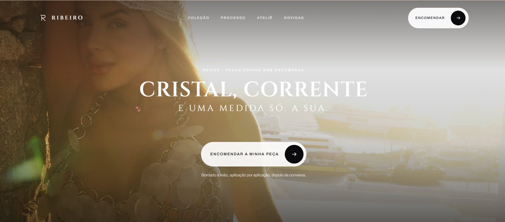
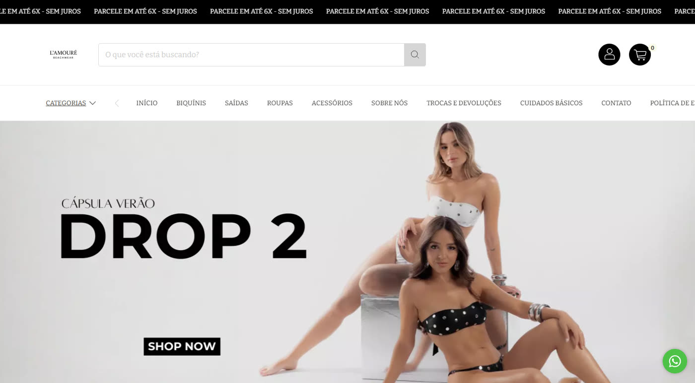
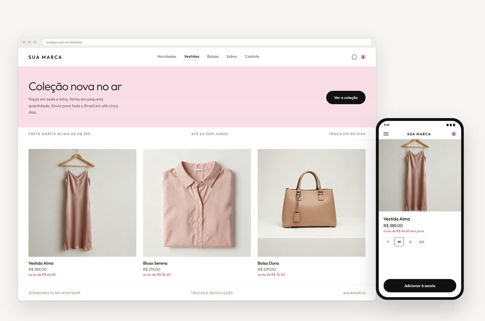
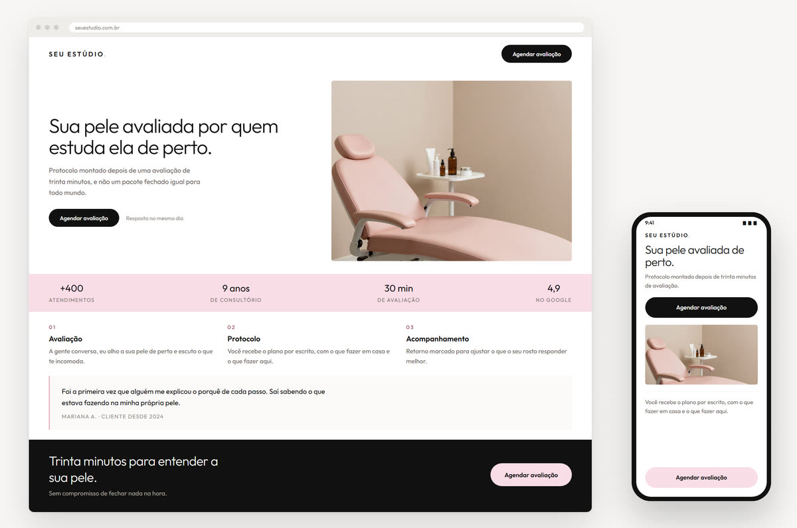
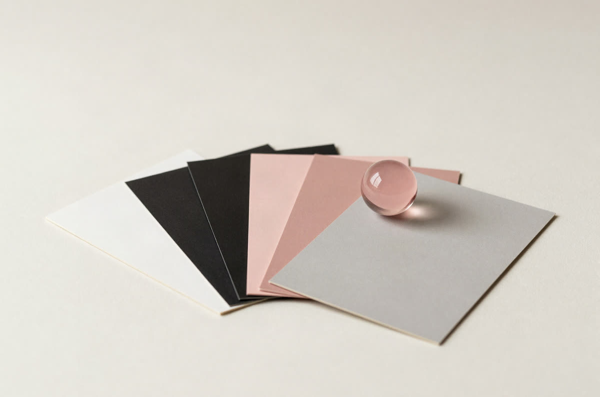
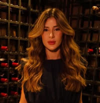
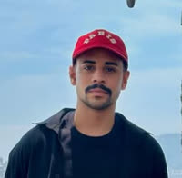

Bordado autoral · Recife
Bordado sob encomenda não cabe num carrinho de compras. O site mostra a coleção e o ateliê, explica como funciona a encomenda e leva a pessoa para a conversa.
Alguém já te pediu o link do seu site e você mandou o Instagram no lugar?
Para quem vende produto e para quem vive de agenda cheia. O texto vem escrito por mim.
Um site trabalha quando você está dormindo, atendendo, de férias, com a família ou no trânsito
Ele atende às três da manhã, explica o seu serviço sem você digitar tudo de novo, mostra como funciona antes da conversa começar e continua no ar quando o post de ontem já sumiu do feed.
O Instagram te mostra para quem já te segue. O Google te mostra para quem está procurando agora e não sabe que você existe. Sem uma página sua, essa pessoa encontra outra.
E tem o efeito que ninguém admite em voz alta: entre duas profissionais com o mesmo trabalho, quem tem site parece a que leva o próprio negócio a sério.
Três perguntas. Responda para você mesma.
Se alguma incomodou, o problema não é o seu trabalho. É que ele não tem onde morar.
Três motivos para você fechar comigo.
Antes do estúdio eu passei anos em varejo de moda e em joalheria, vendendo peça de alto valor, do tipo que ninguém leva por impulso, e treinando equipe para vender. Sei em que ordem a pessoa precisa das informações para decidir, e é essa ordem que vira a estrutura da sua página. Escolher cor e fonte é a última coisa que eu faço.
Você manda mensagem e quem responde sou eu, no meu WhatsApp mesmo. Não passo o seu projeto para equipe nenhuma, então você conta a sua história uma vez só.
É aqui que quase todo site empaca: o layout fica pronto e o texto nunca vem, porque ninguém sabe o que dizer sobre o próprio trabalho. Escrever, do título da primeira tela às perguntas frequentes, é comigo.
Os dois sites aqui embaixo foram feitos exatamente assim. Este que você está lendo também.
Falar no WhatsApp →
Bordado autoral · Recife
Bordado sob encomenda não cabe num carrinho de compras. O site mostra a coleção e o ateliê, explica como funciona a encomenda e leva a pessoa para a conversa.

Moda praia · loja completa
Loja de moda praia com vitrine própria e parcelamento em seis vezes. Ela aguenta drop novo toda temporada sem precisar mexer no site.
Três serviços. Você contrata um, dois ou os três.

01 / sitesIdeal para e-commerce. Catálogo, carrinho e parcelamento, e você aprende a subir coleção nova sozinha.

02 / landing pageUma página só, feita para virar conversa no WhatsApp. É o que resolve para quem vive de agenda cheia. Como essa que você está navegando agora.

03 / marcaPara quem já tem um trabalho bom e uma marca que não acompanha mais. Paleta, tipografia e tudo que deixa o seu perfil e o seu site com a mesma cara.
Do primeiro contato ao site no ar.
Antes de escrever qualquer linha eu leio o seu Instagram inteiro: como você explica cada serviço com as suas palavras, e o que as pessoas perguntam nos comentários e no direct. É desse material que sai a estrutura do site.
Se eu não for o estúdio certo para o seu caso, digo na primeira conversa.
O estúdio sou eu.
Eu desenho as páginas, escrevo os textos, monto e publico. Não terceirizo nenhuma dessas partes, e por isso o site sai com uma voz só.
Eu também fundei duas marcas e toquei uma loja online do começo ao fim, cuidando do site, do estoque e do atendimento. Quando você me contar do seu negócio, não vou precisar que você explique o básico.
O nome veio de casa. M'man é mamãe em francês, e é a palavra que eu mais escuto na vida, o dia inteiro, todo dia. Na hora de batizar o estúdio nenhuma outra teve chance. Quem escolheu foram meus filhos.
Victória
Loja a partir de R$ 1.175. Em até 10x.
Daí para cima depende do escopo. O tamanho do catálogo, quantas páginas a sua operação pede e o que precisa funcionar por trás mudam o valor.
Eu passo o valor fechado depois da conversa. Identidade visual entra no orçamento também, sozinha ou junto com o site.
O texto já está no preço. Você não recebe um layout bonito e vazio esperando o seu texto.
Falar no WhatsApp →Tô impressionada com o que você fez, sinto que meu negócio subiu de nível. Depois que divulguei, teve cliente mandando mensagem dizendo que amou a novidade.
E aquela seção de “leve junto”, que mostra a peça que combina com a que a cliente tá olhando? Funcionando demais. Meu ticket médio subiu.

Lais@bylasilojaMeu Deus, eu tenho certeza que vai ser um sucesso.
Você simplesmente nasceu para isso. Eu fiquei encantado, quero morar dentro desse site.

Hewerton@ribeiro.style_Não sabe por onde começar? Responda quatro perguntas.
Eu monto na tela qual dos três serviços resolve, o que a sua página precisa ter e em que ordem eu faria. Se fizer sentido, você me chama no WhatsApp com tudo isso já escrito.
Leva menos de um minuto. Fica tudo no seu navegador, não me chega nada até você decidir mandar.
O site que você vai ter não existe ainda. Ele começa quando a gente conversa.
Me conte o que você faz. Eu digo, com honestidade, se consigo ajudar e como. E você sai da conversa sabendo o que eu faria no seu caso, mesmo que a gente não feche nada.
Você manda a mensagem, eu respondo com três perguntas rápidas e a gente marca no dia que der para você. Sem ligação surpresa.